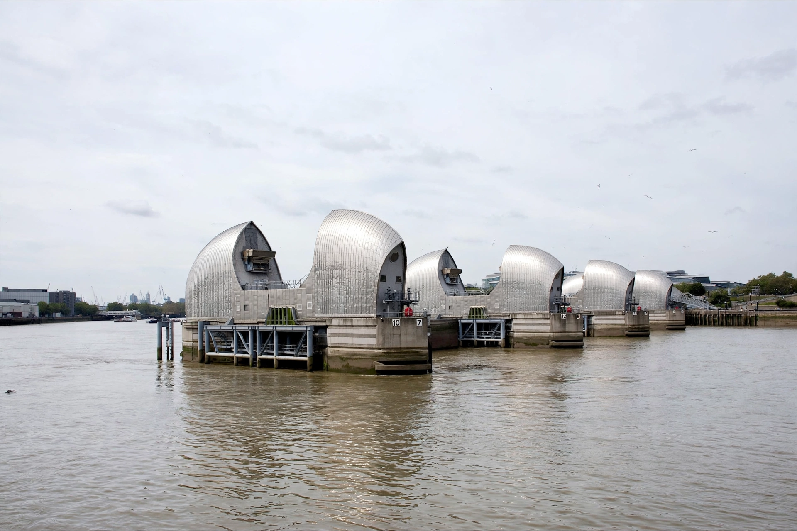

| Thames Barrier | |
|---|---|
 | |
| Location | Woolwich Reach, River Thames, London, England |
| Construction began | 1974 |
| Opening date | 1984 (officially opened 8 May 1984) |
| Cost | £535 million |
| Operator | Environment Agency |
| Length | 520 metres (1,710 ft) |
| Gates | 10 rising sector gates |
The Thames Barrier is a flood defence structure across the River Thames in south-east London. It spans 520 metres (1,710 ft) across the river near Woolwich, and protects about 125 square kilometres (48 sq mi) of central London — including the homes of roughly 1.25 million people — from tidal surges moving up from the North Sea. It was officially opened by Queen Elizabeth II on 8 May 1984, having been under construction since 1974, and is operated by the Environment Agency.
The barrier was conceived after the devastating North Sea flood of 31 January – 1 February 1953, in which a storm surge killed 307 people in England and flooded large areas of the Thames Estuary and the East End of London. The Waverley Committee, set up to investigate the flood, recommended that London be protected against a surge of the 1953 magnitude. Earlier proposals for a barrier dated back to the 19th century, but it was only in the 1960s and 1970s — under the Greater London Council (GLC) — that a barrier at Woolwich Reach was selected over alternatives such as a barrage further downstream.
The mathematical and hydraulic design work was led by engineer Charles Draper, who devised the rising sector gate concept, inspired by the shape of a gas tap. Construction was carried out by a consortium including Costain, Hollandsche Beton Maatschappij and Tarmac.
The barrier consists of ten steel rising sector gates supported by nine concrete piers, six of which house the machinery and stainless-steel-clad cowls that give the structure its distinctive appearance. The four central navigation spans are each 61 metres (200 ft) wide, allowing ships to pass; there are also two smaller navigation spans and four non-navigable spans at the ends.
Each gate is a hollow steel structure shaped like a segment of a circle. When open, the gates rest flat in concrete sills on the river bed, allowing the river to flow freely and ships to pass overhead. When a tidal surge threatens, hydraulic machinery rotates the gates up through 90 degrees so that they form a continuous steel wall across the river, sealing London off from the incoming tide. The barrier can be closed in about 1.5 hours, and closures are coordinated with the high tide so that the river level upstream continues to rise safely behind the barrier.
The decision to close is based on forecasts from the Met Office and the Environment Agency's monitoring of tide levels, river flows and weather pressure systems. The barrier has been closed well over 200 times since 1983, roughly half for flood defence trials and test closures and half in response to genuine tidal threats.
The barrier was originally designed to protect London until about 2030, taking into account predicted sea-level rise. Successive studies have concluded that, with maintenance and possible modification, it can remain effective considerably longer, but long-term planning under the Thames Estuary 2100 (TE2100) programme envisages a replacement barrier further downstream later in the 21st century.